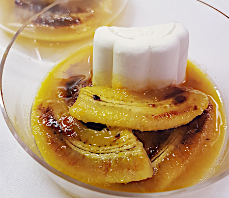

| Zutaten für 2 Personen: | |
| 50 g | Butter |
| 2 | Bananen |
| 50 g | Zucker |
| 60 ml | Orangensaft |
| 2 El | Schnaps |
| Glace | |
50g Butter in der Flambierpfanne zerlassen.
2 Bananen schälen und der Länge nach halbieren. Mit der flachen Seite nach unten in die Pfanne geben.
Auf mittlerer Hitze braten.
50 g Zucker gleichmässig darüber verteilen.
Eventuell Hitze etwas erhöhen um den Zucker zu schmelzen. Den Zucker leicht caramelisieren.
60 ml Orangensaft (oder ein anderer Zitrussaft) auflösen. Hitze reduzieren.
2 El hochprozentiges dazugeben (Cointreau, Cognac, Kirsch, Williams).
Warm werden lassen, vom Herd nehmen und anzünden.
Mit Glace servieren.
Sandra Keller
Hat am 19 März 2021 fein geschmeckt.
@LINKBACK_TAG@ @WAKELOCK@